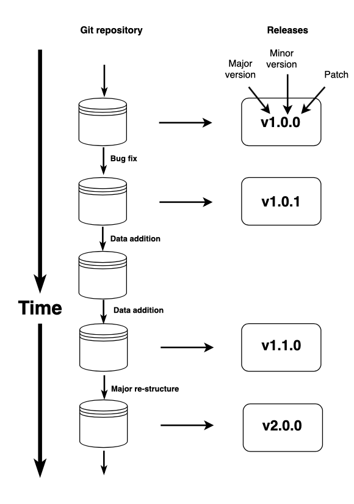

adding_data.RmdThis sections explains how to format files to contribute a new study to AusTraits. Before starting this, you should read more about the structure of the compiled AusTraits database, the structure of the raw data files, and how to build AusTraits.
It is important that all steps are followed so that our automated workflow proceeds without problems.
The main steps are:
austraits.build repository from github and create a new branch in the repo with the name of your dataset_id.data with a name of the dataset_id, e.g. Gallagher_2014.data.csv and metadata.yml and place them within the folder.data.csv and metadata.ymlfiles as necessary.data.csv or metadata.yml files.It may help to download one of the existing datasets and use it as a template for your own files and a guide on required content. You should look at the files in the config folder, in particular the definitions files for the list of traits we cover and the supported trait values for each trait. Or read through information on the supported traits and trait values.
Once you have prepared your data.csv and metadata.yml files within a folder in the data directory, you can incorporate the new data into Austraits by running:
This step updates the file remake.yml with appropriate rules for the new dataset; similarly if you remove datasets, do the same. (At this stage, remake offers no looping constructs so for now we generate the remake file using whisker.)
You can then rebuild Austraits, including your dataset.
The austraits.build repository includes a bunch of functions that help build the repository. To use these, you’ll need to make them available.
The easiest way is to load the functions into your workspace is to run the following (from within the repository)
metadata.yml fileOne way to construct the metadata.yml file is to use one of the existing files and modify yours to follow the same format. As a start, checkout some examples from existing studies in Austraits, e.g. Angevin_2010 or Wright_2004.
Note, when editing the metadata.yml, edits should be made in a proper text editor (Microsoft word tends to stuff up the formatting). For example, Rstudio, textmate, sublime text, and Visual Studio Code are all good editors.
To assist you in constructing the metadata.yml file, we have developed functions to help fill in the different sections of the file. If you wish to include additional elements, you can afterwards edit the file further.
To use the functions, make sure you first run the following, to make the functions available
OR
The first function creates a basic template for your the metadata.yml file for your study. Assuming you have already created a file data.csv in the folder data/your_dataset_id, run
The function will ask a series of questions and then create a relatively empty file data/your_dataset_id/metadata.yml. The key questions are:
Three functions are available to help entering citation details for the source data.
The function metadata_create_template creates a template for the primary source with default fields for a journal article, which you can then edit manually.
Alternatively, if you have a doi for your study, use the function:
and the different elements within source will automatically be generated. By default, details are added as a primary source. To override this, specify the type
Alternatively, if you have reference details saved in a bibtex file called myref.bib you can use the function
(These options require the package rcrossref and RefManageR to be installed.)
The function metadata_create_template creates a template for entering details about people, which you can then edit manually.
Occasionally all the changes we want to make to dataset may not fit into the prescribed workflow used in Austraits. For example, we assume each trait has a single unit. But there are a few datasets where data on different rows have different units. So we want to make to make some custom modifications to this particular dataset before the common pipeline of operations gets applied. To make this possible, the workflow allows for some custom R code to be run as a first step in the processing pipeline. That pipeline (in the function load_study) looks like this:
data <-
read_csv(filename_data_raw, col_types = cols()) %>%
custom_manipulation(metadata[["config"]][["custom_R_code"]])() %>%
parse_data(dataset_id, metadata) %>%
...Note the second line. After loading the csv file, we can apply some Custom R code small manipulations to the dataframe before processing it. Custom R code is valid R code, but written inside the metadata.yml file. While developing this, you’ll want to test your code. This can be achieved by running the function
which returns a data frame, showing how the datasets looks after being manipulated.mes
Occasionally all the changes we want to make to dataset may not fit into the prescribed workflow used in AusTraits. As an example, for Blackman_2010 we want to combine two columns to create an appropriate site variable. So we want to make to make some custom modifications to this particular dataset before the common pipeline of operations gets applied. To make this possible, the workflow allows for some custom R code to be run as a first step in the processing pipeline. That pipeline (in the function load_study) looks like:
data <-
read_csv(filename_data_raw, ol_types = cols(), guess_max = 100000) %>%
custom_manipulation(metadata[["config"]][["custom_R_code"]])() %>%
parse_data(dataset_id, metadata) %>%
...Note the second line. This is where the custom code get’s applied, right after the file is loaded.
Here is the code that was included in data/Blackman_2010/metadata.yml under custom_R_code.
data %>% mutate(
site = ifelse(site == "Mt Field" & habitat == "Montane rainforest", "Mt Field_wet", site),
site = ifelse(site == "Mt Field" & habitat == "Dry sclerophyll", "Mt Field_dry", site)
)This is the finished solution. This code gets run everytime we rebuild the Blackman_2010 dataset.
To get there we did as follows. Generally, the custom R ccode should
data, and apply whatever fixes are neededtiydr, like mutate, rename, etc, and otherwise avoid extrenal packages; at the end of each statement).First, load an object called data to play with, as if you were building this dataset object:
library(readr)
library(yaml)
data <- read_csv(file.path("data", "Blackman_2010", "data.csv"), col_types = cols(.default = "c"))
dataSecond, write your code to manipulate data, like the example above.
Third, once you have some working code, you then want to add it into your yml file under a group config -> custom_R_code.
Finally, check it works. Let’s assume you added it in. The function metadata_check_custom_R_code loads the data and applies the custom R code:
Add sites details
This function assumes you have site details stored in wide format, in R:
#> # A tibble: 2 x 6
#> site_name description `elevation (m)` `latitude (deg)` `longitude (deg…
#> <chr> <chr> <dbl> <dbl> <dbl>
#> 1 Atherton Tropical r… 800 -17.1 146.
#> 2 Cape Tri… Complex me… 25 -16.1 145.
#> # … with 1 more variable: `rainfall (mm)` <dbl>If your data is in a file, you’ll need to read it in first.
Substitutions can be added by running:
where find is the trait value used in the data.csv file and replace is the trait value supported by Austraits.
We’ve implemented code to semi-automate the checking of names using the R package Taxonstand (for more documentation see here). To generate a suggested name change for a specific study run:
If TaxonStand finds taxonomic changes it will add the relevant lines of code directly to the metadata.yml file.
TaxonStand has been configured in the above function to only permit relatively certain changes (e.g. with a minor change to spelling or known synonym).
There are additional arguments you can add for the function metadata_check_taxa including: - update where the default is TRUE, meaning changes found will be added to the metadata.yml file - typos where the default is FALSE, meaning typos will not be corrected - diffchar which indicates the number of characters that can be different for a typo-match. Here the default is two.
Therefore, if you want the function metadata_check_taxa to correct 1 and 2 character typos, run the function as follows:
If TaxonStand fails to find a suitable alignment, and you have identified one yourself, you can add it to the metadata by running
For any plants that are only identified to genus, make sure the genus name is the first part of the name given; this will ensure its genus and family is recorded appropriately. I.e. use ‘Acacia sp. long leaf’, not ‘long leaf Acacia’.
You can also run some automated tests to ensure the dataset meets required set up. The tests run through a collection of pre-specified checks on the files for each study. The output alerts you to possible issues needing to be fixed, by comparing the data in the files with expected structure and allowed values, as specified in the definitions. NBy far the most common error is that there are unusual text characters, for example often special hyphen’s, quote symbols, plus-minus symbols. These should be replaced by simple text equivalents.
To run the tests, the variable dataset_ids must be defined in the global namespace, containing a vector of ids to check. For example
To enable better quality checks we have code to generate a report on the data in each study.
(Reports are written in Rmarkdown and generated via the knitr package. The template is stored in scripts/report_study.html).
To generate a report for a particular study:
austraits <- readRDS("export/data/austraits.rds")
source("R/report_utils.R")
build_study_report("Wright_2002")To generate a report for a collection of studies:
Or for all studies:
Both functions build_study_report & build_study_reports can accept an additional argument overwrite=TRUE, to overwrite existing reports if they exist. Eg.
One thing to check in particular, is any data have been excluded. These are available in the frame excluded_data.
Possible reasons for excluding that value include:
config/unit_conversions.csv
trait_name not listed in config/definitions.yml, under traits
value for trait not included for that trait in config/definitions.yml
For your dataset, you can investigate why you have excluded data as follows.
Look at everything
austraits$excluded_data %>%
filter(dataset_id=="ANBG_2019")
#> # A tibble: 2,032 x 12
#> error dataset_id species_name site_name context_name observation_id
#> <chr> <chr> <chr> <chr> <chr> <chr>
#> 1 Unsu… ANBG_2019 Abelmoschus… site_at_… <NA> ANBG_2019_0001
#> 2 Unsu… ANBG_2019 Abelmoschus… site_at_… <NA> ANBG_2019_0001
#> 3 Unsu… ANBG_2019 Abutilon ot… site_at_… <NA> ANBG_2019_0010
#> 4 Unsu… ANBG_2019 Abutilon ot… site_at_… <NA> ANBG_2019_0010
#> 5 Unsu… ANBG_2019 Acacia acin… site_at_… <NA> ANBG_2019_0012
#> 6 Unsu… ANBG_2019 Acacia acin… site_at_… <NA> ANBG_2019_0012
#> 7 Unsu… ANBG_2019 Acacia acum… site_at_… <NA> ANBG_2019_0017
#> 8 Unsu… ANBG_2019 Acacia acum… site_at_… <NA> ANBG_2019_0017
#> 9 Unsu… ANBG_2019 Acacia adsu… site_at_… <NA> ANBG_2019_0019
#> 10 Unsu… ANBG_2019 Acacia adsu… site_at_… <NA> ANBG_2019_0019
#> # … with 2,022 more rows, and 6 more variables: trait_name <chr>, value <chr>,
#> # unit <chr>, value_type <fct>, replicates <chr>, original_name <chr>If you want to inspect this more closely, just pass it into View
How many of each type:
austraits$excluded_data %>%
filter(dataset_id=="ANBG_2019") %>%
pull(error) %>% table()
#> .
#> Missing value Unsupported trait
#> 36 1986
#> Unsupported trait value Value does not convert to numeric
#> 1 9How many of each type by trait:
austraits$excluded_data %>%
filter(dataset_id=="ANBG_2019") %>%
select(trait_name, error) %>%
table()
#> error
#> trait_name Missing value Unsupported trait Unsupported trait value
#> germination_treatment 0 0 1
#> LengthSample 0 957 0
#> seed_mass 0 0 0
#> seed_shape 36 0 0
#> WidthSample 0 1029 0
#> error
#> trait_name Value does not convert to numeric
#> germination_treatment 0
#> LengthSample 0
#> seed_mass 9
#> seed_shape 0
#> WidthSample 0View records that aren’t missing values
By far our preferred way of contributing is for you to contribute files directly into the repository and then send a pull request with you input. You can do this by
In short,
Before you make a substantial pull request, you should always file an issue and make sure someone from the team agrees that it’s worth pursuing. a problem. If you’ve found a bug, create an associated issue and illustrate the bug with a minimal reprex illustrating the issue.
If this is not possible, you could email the relevant files (see above) to the Austraits email: austraits.database@gmail.com
There are multiple ways to merge a pull request, including using GitHub’s built-in options for merging and squashing. When merging a PR, we ideally want
There’s two ways to do this. For both you need to be an approved maintainer.
You can merge in your own PR after you’ve had someone else review it.
When merging in someone else’s PR, the built-in options aren’t ideal. as they either take all of the commits on a branch (ugh, messy), OR make the commit under the name of the person merging the request.
The workflow below describes how to merge a pull request from the command line, with a single commit & attributing the work to the original author. Lets assume a branch of name Smith_1995.
First from the master branch in the repo, run the following:
git merge --squash origin/Smith_1995Then in R
Now back in the terminal
git add .
git commitAdd a commit message, referencing relevant pull requests and issues, e.g.
Smith_1995: Import new data
For #224, closes #286And finally, amend the commit author, to reference the person who did all the work!
git commit --amend --author "XXX <XXX@gmail.com>"Releaes of the dataset are snapshots that are archived and available for use.
We use semantic versioning to label our versions. As discussed in Falster et al 2019, semantic versioning can apply to datasets as well as code.
The version number will have 3 components for actual relases, and 4 for development versions. The structure is major.minor.patch.dev, where dev is at least 9000. The dev component provides a visual signal that this is a development version. So, if the current version is 0.9.1.9000, the release be 0.9.2, 0.10.0 or 1.0.0.
Our approach to incrmenetaing version numbers is
major: increment when you make changes to the structure that are likely incompatible with any code written to work with previous versions.minor: increment to communicate any changes to the structure that are likely to be compatible with any code written to work with the previous versions (i.e., allows code to run without error). Such changes might involve adding new data within the existing structure, so that the previous dataset version exists as a subset of the new version. For tab- ular data, this includes adding columns or rows. On the other hand, removing data should constitute a major version because records previously relied on may no longer exist.patch: Increment to communicate correction of errors in the actual data, without any changes to the structure. Such changes are unlikely to break or change analyses written with the previous version in a substantial way.
Figure: Semantic versioning communicates to users the types of changes that have occurred between successive versions of an evolving dataset, using a tri-digit label where increments in a number indicate major, minor, and patch-level changes, respectively. From Falster et al 2019, (CC-BY).
The process of making a release is as follows. Note that correpsonding releases and versions are needed in both austraits and austraits.build:
Update the version number in the DECRIPTION file, using `
Compile austraits.build.
Update the documentation.
Commit and push to github.
Make a release on github, adding version number
Prepare for the next version by updating version numbers.
A comma-separated values (CSV) file is a delimited text file that uses a comma to separate values. Each line of the file is a data record. Each record consists of one or more fields, separated by commas. This is a comma format for storing tables of data in a simple text file. You can edit it an Excel or in a text editor.For more, see here.
The yml file extension (pronounced “YAML”) is a type structured data file, that is both human and machine readable. You can edit it any text editor, or also in Rstudio. Generally, yml is used in situations where a table does not suit because of variable lengths and or nested structures. It has the advantage over a spreadsheet in that the nested “headers” can have variable numbers of categories. The data under each of the hierarchical headings are easily extracted by R.
If you encounter a PDF table of data and need to extract values, this can be achieved with the tabula-java tool. There’s actually an R wrapper (called tabulizer), but we haven’t succeeded in getting this running. However, it’s easy enough to run the java tool at the command line on OSX.
Download latest release of tabula-java and save the file in your path
Run
java -jar tabula-1.0.3-jar-with-dependencies.jar my_table.pdf -o my_data.csvThis should output the data from the table in my_table.pdf into the csv my_data.csv